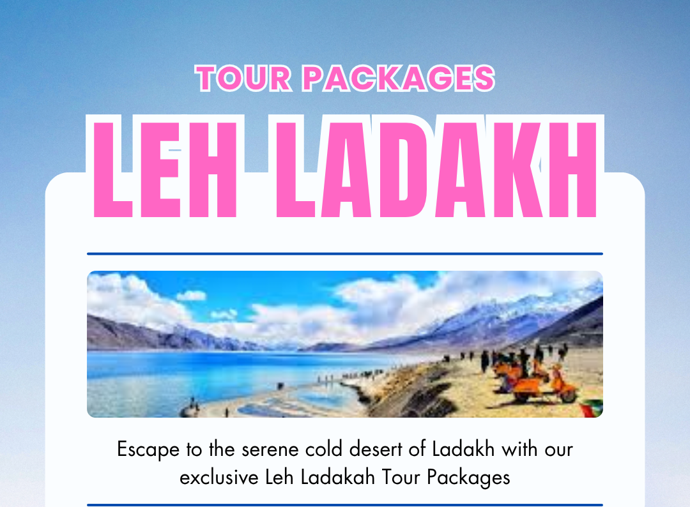

Home>Leh Ladakh Tour Packages
Leh Ladakh Tour Packages0 Packages
Are you planning a romantic escapade to Himalayas? Then look no further and book your honeymoon trip to Kashmir which is surrounded by snow clad mountains and lush green meadows. Kashmir also known as "Heaven On Earth" is a famous honeymoon destination because of its spectacular scenery, vibrant culture and warm hospitality by locals. At MaximTrip, we provide best Kashmir Honeymoon Packages at affordable prices. We are a local tour and travel agency which offers best Couple packages for newlyweds. Kashmir is a place full of natural beauty and comprises of snow peaks, pristine lakes, lush green valleys and much more. With our Kashmir couple tour package, you will be offered special discounts on flight tickets, pick and drop from airport, pre booked lavish honeymoon suites, meals, sightseeing tours with romantic outdoor activities. MaximTrip is a best travel company specialised in offering best Kashmir honeymoon packages at both affordable and costly prices. We offer Kashmir honeymoon budget trips and Kashmir luxury couple tours. On your Honeymoon tour, you can explore many famous attractions of Kashmir such as Srinagar, Gulmarg, pahalgam, Sonmarg, nishat bagh, Shalimar bagh and Chashma Shahi etc. We also offer opportunities for various adventure activities such as para gliding, Shikara rides, gondola ride and many more. Get ready to spend some cozy time with your spouse and book now with us your Kashmir couple package. Why book Kashmir Honeymoon Packages with MaximTrip? MaximTrip is a leading travel agency in Kashmir and booking your honeymoon trip with us will ease your travel stress and also provide you with amazing travel services. Kashmir is a charming place to visit due to its natural beauty and rich culture. The mesmerizing views of snow-capped-mountains, verdant green valleys, and tranquil rivers create a perfect romantic setting. Now lets discuss about the reasons why to book your Honeymoon tour with us: Nature walks and sightseeing tours: Kashmir is well-known for its breathtaking scenery, which includes snow-capped mountains, luxuriant valleys, and peaceful lakes. With our Kashmir couple holiday, we will let you enjoy The captivating surroundings offering a perfect romantic escapade for newly weds. Romantic Experiences: With our 5Days-4Nights Best Kashmir Package For Couple, you will enjoy exclusive romantic activities like houseboat stays, Shikara rides on Dal Lake, and sightseeing to various Mughal gardens. These activities make your honeymoon cozy and memorable. Adventure and enthusiasm: For adventure lover couples, MaximTrip offers various travel activities such as trekking in Pahalgam, skiing in Gulmarg and meadow exploration in Sonmarg for romantic couples seeking a little adventure. Our 7D-6N Kashmir Heartfelt Escape, includes both leisure and exploration, guaranteeing a enjoyable journey. Explore local cultural heritage: Kashmir's artistic legacy gives your honeymoon a special touch. Taste the authentic Kashmiri cuisines, visit the local markets, and experience the warm hospitality of the locals. Kashmir Tour Packages For Couple Our Kashmir honeymoon tour package offers a perfect blend of romance and adventure in the magical valley of Kashmir. Explore Srinagar, Pahalgam, Gulmarg, Sonmarg, and Doodhpathri on your Kashmir couple tour with us. With over 15 years of experience and more than 40,000 happy customers globally, MaximTrip specializes in creating dream Honeymoon packages. Our Kashmir tour for couples promises an enchanting experience, where the beauty of Srinagar, Pahalgam, Gulmarg, and Sonmarg will leave you awestruck. From the tranquility of houseboats to the thrilling adventures in Gulmarg’s snow-capped mountains, each moment is crafted to create lifetime memories. Whether you want to explore the serene meadows of Doodhpathri or enjoying the scenic views of Sonmarg, our honeymoon packages offers an romantic getaway making it an unforgettable journey of a lifetime. Top Kashmir honeymoon places to visit Famously called as "Heaven on Earth" Kashmir is a honeymooner's destination, offering romance In the midst of spectacular spontaneous beauty. Here’s a guide to some of the finest places to visit in Kashmir that promise to make your honeymoon truly unforgettable: 1. Srinagar Srinagar, the summer capital of Jammu and Kashmir is a top most attraction to visit on your Kashmir honeymoon trip. It is blessed with serene lakes and charming Mughal gardens. Dal Lake, adorned with houseboats and Shikaras, offers a romantic setting for a leisurely boat ride at sunset. Don’t miss out visiting the vibrant Shalimar-Bagh and Nishat-Bagh gardens, where you can walk hand in hand In the midst of blooming flowers and cascading fountains. Experience the essence of romance with our exclusive Kashmir honeymoon packages designed to enhance your stay in Srinagar. 2. Gulmarg Known for its pristine beauty and adventure sports, Gulmarg is perfect for couples seeking serenity and thrills. Enjoy skiing and snowboarding on the powdery slopes of "Apharwat-Peak" in winter or take a gondola ride for all-embracing views of snow-capped peaks and lush meadows dotted with wildflowers. Book our 6D-5N Kashmir Love At First Sight to indulge in the perfect blend of adventure and romance in Gulmarg. 3. Pahalgam Nestled along the "Lidder River", Pahalgam is renowned for lush valleys, pine forests, and sparkling streams. Ideal for nature enthusiasts and adventure-loving couples, explore "Betaab-Valley" on a romantic horse ride or retreat to Aru and Chandanwadi valleys for peace in the midst of nature’s bounty. Our 5night-6days Kashmir Snowflakes and Sweet Romance, assure you experience the tranquil beauty of Pahalgam in all its glory. 4. Sonmarg Sonmarg, also known as "Meadow of Gold" offers breathtaking views of alpine lakes, meadows adorned with wildflowers, and glaciers against towering Himalayan peaks. Enjoy pony rides to "Thajiwas Glacier" or immerse yourselves in the serene beauty of the region with our exclusive 6N-7D Kashmir Love Beyond The Clouds tailored for an unforgettable exposure. Activities to Enjoy on Your Kashmir Honeymoon Tour Our Kashmir honeymoon package for 7 days cover a variety of activities that cater to different interests. Here are some spotlight: Shikara Rides: Enjoy a romantic Shikara ride to truly experience the placid of Dal Lake. You may even have a picnic on the lake and visit the floating markets and gardens with this activity. Gondola Ride: It is another outdoor activity to enjoy on your Kashmir couple tour. This is world’s highest cable car ride ferrying 600 people at a time and operates at a height of 13,000 feet. Houseboat Stay: Another cozy travel activity to enjoy on your Kashmir honeymoon tour is staying in a houseboat. These floating boats are located on the banks of Dal Lake and are just like hotels offering you modern amenities with a touch of culture. Explore Mughal Gardens: Enjoy the charming beauty of Mughal gardens with your spouse on your Kashmir newlyweds trip. You can visit Nishat bagh, Shalimar, Chashma Shahi and Pari Mahal. Couple Photoshoots: Make your honeymoon trip more exciting by capturing some lovely couple shots amidst the mesmerizing beauty of Kashmir. Pony Ride: Enjoy horse riding on your Kashmir honeymoon vacation which is a popular travel activity of Kashmir valley. You can enjoy pony riding in Gulmarg, Pahalgam, Sonmarg and Yusmarg. Best local foods to try on your Kashmir couple trip On your honeymoon trip to Kashmir, you can enjoy some local dishes which are listed below Rogan Josh ( Spicy lamb curry): If you want to taste the authentic Kashmiri foods, then you must try Rogan Josh on your Kashmir honeymoon tour. Rogan Josh is a traditional lamb curry with tasty spicy flavours. the key ingredients of this dish include red meat, and aromatic spices , kashmiri chillies, garlic, bay leaves, ginger, cloves, cardamom, and cinnamon. Tabak Maaz: It is another famous Kashmiri food that is crispy mutton dish prepared by marinating lamb ribs and shallow fried in ghee. Aromatic spices are used for marination, adding more taste to this delicious food of multi course meal Wazwan. Kahwa ( Herbal green tea): It is a traditional green tea that is made by boiling water with saffron, almonds and cardamom. it has a nice fragrance and is prepared in a copper kettle called Samovar. Nadru (Lotus stem): Nadru is a popular local grown Kashmiri food in Dal Lake. It is also called Lotus Stem and is used in many other dishes such as Nadru Yakhni, and Nadir Monji. You should taste Nadru during your Kashmir couple holiday as it is rich in minerals, vitamins and fiber. Top Local souvenirs to buy on Kashmir honeymoon tour Kashmir is famous for its busy markets selling traditional Kashmir products. You can purchase many local souvenirs during your Kashmir couple tour package: Pashmina Shawls: Pashmina is an iconic product of Kashmir which is made with the hair of Ibex goat found in Ladakh. Buy this beautiful shawl from the markets of Kashmir and gift your wife the most exquisite product of Kashmir with colorful embroidery and intricate designs. Paper Mache products: Another famous product to purchase on your Kashmir honeymoon trip is Paper mache items. Paper Mache is an art in which various decorative pieces are designed with artistic work and colors. Almonds and walnuts: Shop dryfruits during your honeymoon in Kashmir. Kashmiri dryfruits are delicious in taste and are available across all districts of Kashmir. Saffron: It is one of the most costly and precious spice of the world. It is grown in Pampore, Srinagar only other than in Spain. There are many varieties of Saffron that you can buy on your Kashmir honeymoon trip package among which the finest one is "mogra cream", found only in Kashmir. Kashmir tour packages for couple price At MaximTrip, we offer you best Kashmir couple trip packages with affordable prices and amazing services. We provide all kinds of Kashmir honeymoon packages such as Cheapest Kashmir couple packages starting from Rs. 8000 and Luxurious Kashmir honeymoon tour starting from INR 12000. Book your Honeymoon trip with us and avail best prices and discounts. Kashmir honeymoon packages with flight For a more convenient trip, we offer Kashmir couple packages with flight from different cities of India at cheap prices. The popular packages include Kashmir honeymoon packages from Delhi and Kashmir honeymoon packages from Mumbai.
Filters
Price Range
₹100
₹25799
Approx price per person
Duration
Hotel Star Rating
Route City
Location
No packages found
Try adjusting your filters to see more results
FAQs (Frequently Ask Questions)
What do the Kashmir Tour Packages include?
Our kashmir tour packages typically include accommodations, transportations, sightseeing tours, meals as per the package itinerary, and guided local tours.
How many days are enough for Kashmir tour?
kashmir has so much to offer in terms of tourist attractions. a 6 nights 7 days Kashmir tour package would be sufficient to explore Srinagar, Gulmarg, pahalgam and Sonmarg along with enjoying amazing adventure activties.
What are the essential items to pack for Kashmir trip?
The essentail items to pack depend largely upon the type of season you are visting for Kashmir tour. you need light woolens, pair of shoes, sunscreen and sunglasses in summer season. for winter, you can pack thermals, heavy woolens, waterproof shoes and warm gloves.
Can we add adventure activities to my kashmir tour package?
Yes, you can include adventure activities such as trekking, skiing, or paragliding in your kashmir holiday Package as per your request, ensuring a thrilling experience.
What are some of the best sightseeing destinations included in the kashmir tour packages?
Popular destinations typically included in your Kashmir package are Srinagar, Gulmarg, Sonmarg, Pahalgam, and Doodhpathri each offering unique experiences and stunning natural beauty.